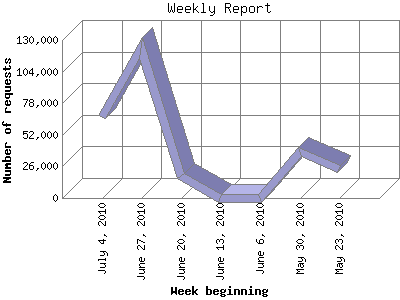

The Weekly Report identifies the activity for each week within the report
time frame. Remember that one page hit can result in several server requests
as the images for each page are loaded.
Note: Depending on the
report time frame for this report the first and last week may not represent
a full seven day week, resulting in lower hits.

| Week beginning | Number of requests | Number of page requests | |
|---|---|---|---|
| 1. | May 23, 2010 | 24,272 | 143 |
| 2. | May 30, 2010 | 37,688 | 333 |
| 3. | June 6, 2010 | 0 | 0 |
| 4. | June 13, 2010 | 0 | 0 |
| 5. | June 20, 2010 | 18,300 | 150 |
| 6. | June 27, 2010 | 123,488 | 904 |
| 7. | July 4, 2010 | 66,362 | 408 |
Most active week beginning June 27, 2010 : 904 pages sent. 123,488 requests handled.
Weekly average: 387 pages sent. 54,022 requests handled.
This report was generated on July 7, 2010 05:38.
Report time frame May 29, 2010 00:00 to July 6, 2010 23:59.
| Web statistics report produced by: analog 6.0 / Report Magic 2.21 |